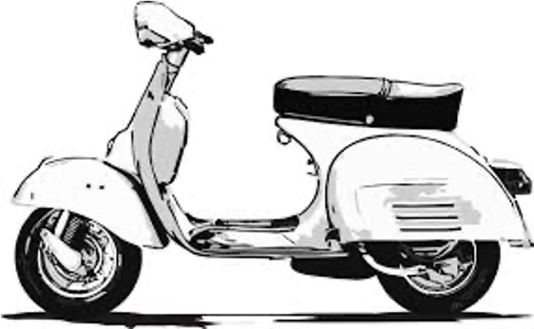

Exercices¶
Questions¶
Une boucle est une d’un .
Exercice 1 - Scooter¶

# %load exercice1.py
# Exercice 1 Scooter
# Objectif:
# - while
# Le 1er janvier, vos parents ont déposé sur votre livret d'épargne 1500 chf
# au taux d'intérêt de 1,5% pour que vous vous achetiez un scooter à 1700 chf.
# Écrire un programme pour savoir au bout de combien d'années vous pourrez avoir votre scooter.
# 1. Créer une variable livret et lui affecter la valeur 1500
# 2. Créer une variable annee et lui affecter la valeur 1
# 3. Ecrire une boucle while avec la condition livret < 1700
# changer la valeur du livret dans la boucle
# ne pas oublier d'incrementer l'annee
# 4. Afficher la variable annee avec la fonction print()
Exercice 2 - Les billes¶
# %load exercice2.py
# Exercice 2: les billes
# - boucles for/while
# - range()
# Inès veut construire une pyramide à base carrée
# (comme sur la photo)
# La pyramide sur la photo a 7 étages.
# 1. Avec une boucle for comptez combien de billes
# faut-il pour 7 étages
# conseil : initialiser billes à 0, et incrémenter sa valeur dans la boucle for
# 2. Inès a 1000 billes.
# Combien d'étages au maximum aura sa pyramide?
# conseil: utiliser la boucle while
Exercice 3 - Football¶
# %load exercice3.py
# Exercice 3 football
#
# Objectifs :
# - boucle for/while
# C’est le mercato et un attaquant est convoité par deux clubs F et G qui lui proposent le même salaire mensuel
# mais des systèmes différents pour les primes par but marqué :
# Le club F lui propose : une prime de 8 000 euros par but marqué pour les dix premiers buts
# marqués puis de 11 300 euros par but marqué à partir du onzième but.
#
# Le club G lui propose : une prime de 10 000 euros par but marqué quel que soit le nombre de buts inscrits.
#
# 1. Ecrire un programme qui calcule la prime pour 12 buts marqués dans le club G
# conseil : initialiser la prime à 0 puis l'incrémenter dans une boucle for
# 2. Ecrire un programme similaire qui calcule la prime pour 12 buts marqués dans le club F
# conseil : utiliser if-else pour incrémenter 8000 les 10 premiers buts sinon 11300 le reste des buts
# 3. Écrire un script qui détermine le nombre de buts que doit marquer l’attaquant
# pour que le montant de la prime offerte par le club F soit la plus intéressante.
# conseil : utiliser une boucle while